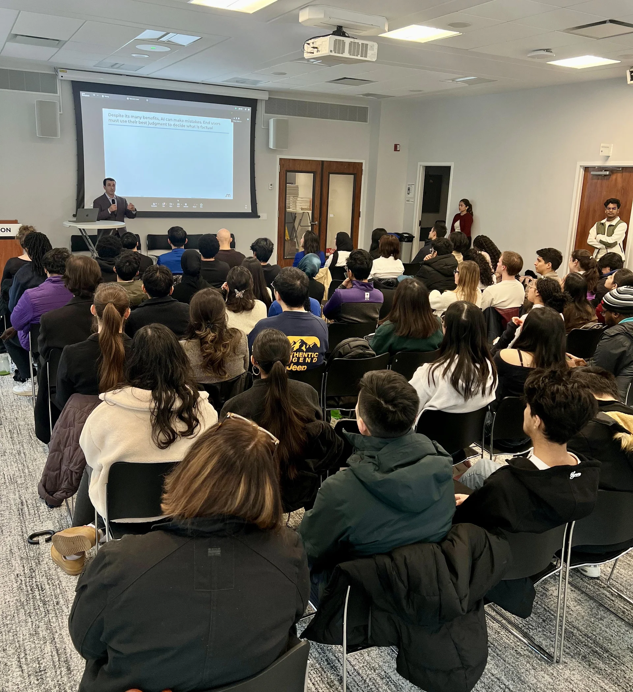
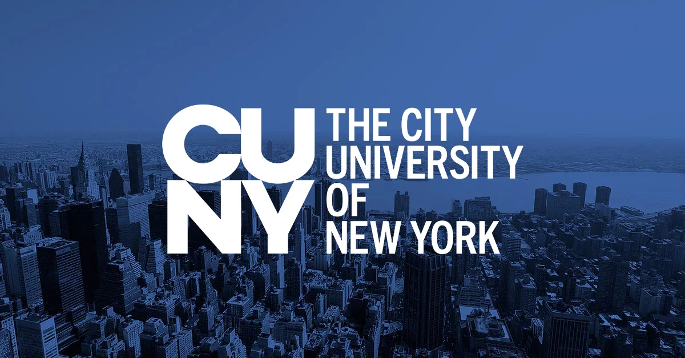
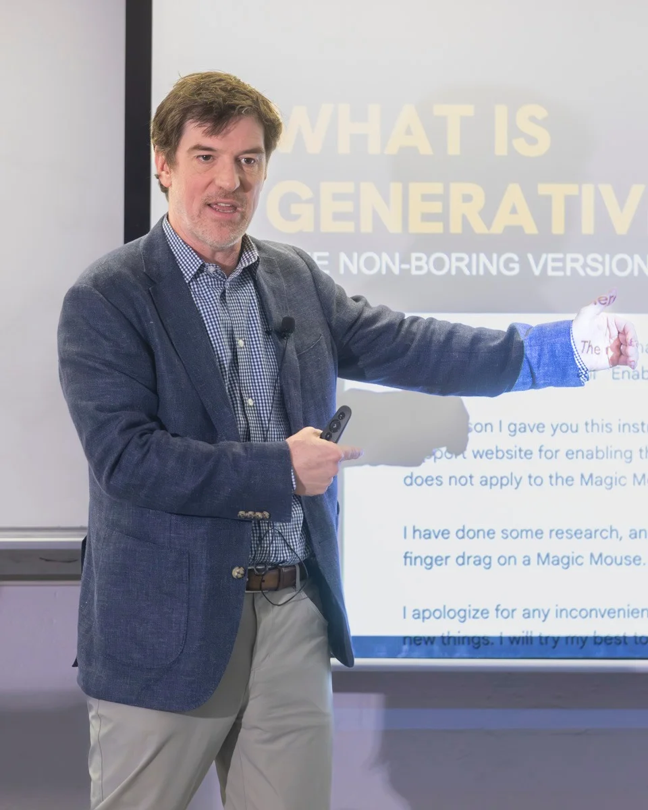
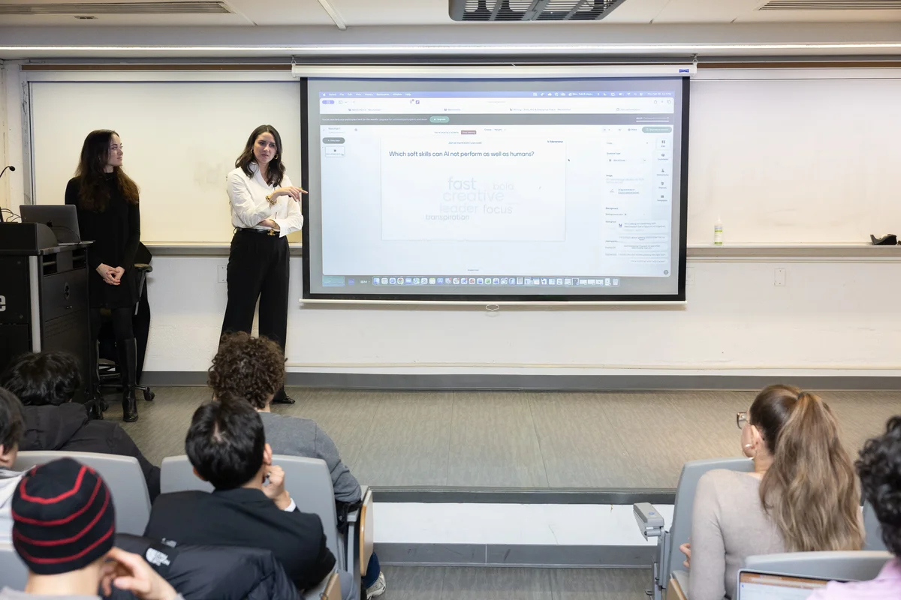
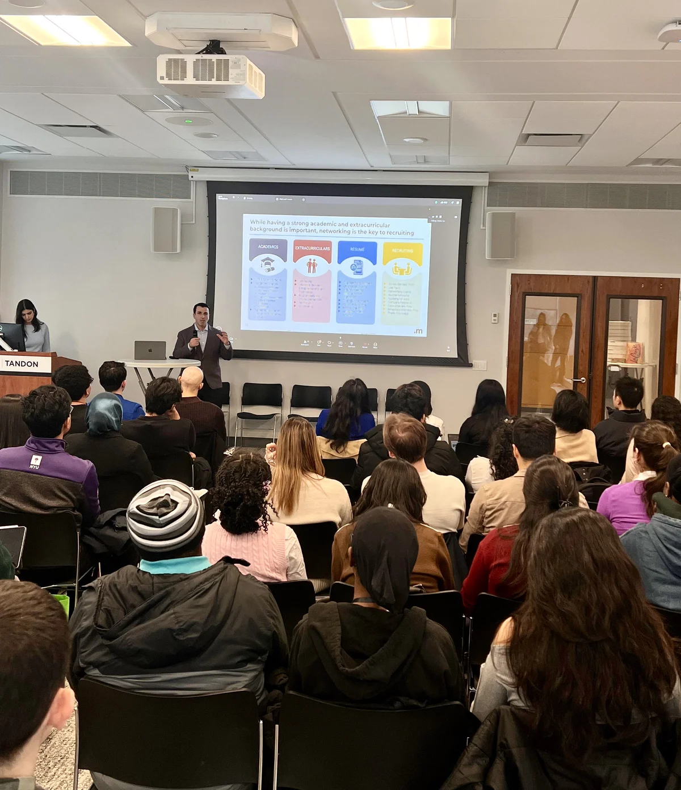
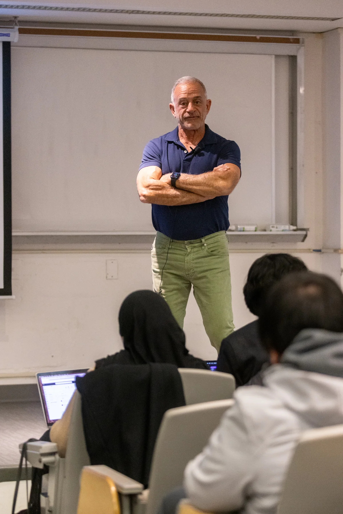

CUNY AI Literacy and Professional Readiness Series
Applied, ethical AI for real-world learning and career readiness
across CUNY and NYU
About the Initiative
The CUNY AI Literacy and Professional Readiness Series is a Spring 2026 initiative led by Dr. Ngoc Cindy Pham, Associate Professor in the Department of Management, Marketing & Entrepreneurship, within Murray Koppelman School of Business at Brooklyn College.
Supported by a grant from the CUNY AI Innovation Fund through the Office of Academic Innovation (CUNY Office of Academic Affairs), the series equips CUNY students with practical, ethical, and career-ready AI skills. The program brings together students from Brooklyn College, other CUNY campuses, and NYU Tandon School of Engineering through hands-on, industry-informed sessions that connect classroom learning with real-world applications in business, research, and career development.
Participants earn a digital badge as part of a micro-credential pathway designed to demonstrate AI readiness to future employers. The series emphasizes critical thinking before tool adoption, ethical decision-making, applied enterprise use cases, and targeted support for first-generation and immigrant students. The initiative incorporates a train-the-trainer framework, empowering bootcamp graduates to teach skills such as AI-assisted web design back to their peers, extending the program's reach across the CUNY community and deepening participants' own professional development.
The initiative is part of CUNY's broader efforts in AI leadership development and workforce-focused AI literacy programming.

Featured Sessions

Artificial Intelligence & The Future of Work

AI in Business & Marketing

Applying AI to Enterprise Consulting

How AI is Reshaping Marketing & Advertising
Speaker Highlights
Across February, March and April, the series reached 1000+ attendees (including students, faculty and staff) with a 94% satisfaction rate
AI & the Future of Work
February 19, 2026
Conor is CEO of AI Mindset, NYT bestselling author, founder of Next
Generation Nepal, former Chief AI Architect at NYU Stern, and recognized
by Edelman as a Top Trusted Voice in AI.
118 participants.
AI in Business & Marketing
February 26, 2026
Technology Managing Director, IBM
93 participants.
Advanced Prompt Engineering
March 3, 2026
Sacred Heart University
130+ students.
AI in Marketing & Advertising
March 5, 2026
Marketing Consultant
78 attendees.
AI in Enterprise Consulting
March 12, 2026
VP, Monks
217 RSVPs (joint CUNY & NYU session).
April 16, 2026
Chief Growth Officer, U of Digital
56 attendees.
April 21, 2026
Director of AI Research & Engineering, DTCC
58 attendees.
Train-the-Trainer Spotlights
Ali Imran Deniz
Lead Developer and Event Coordinator
Tulay Altin
Damir Shavkatov
Vice Chair for Senior College Affairs, USS

Jason Lin
Anna Belenko
President of Computer Science Club | Director, Hack Brooklyn
Ragib Nehal
Aspiring Software Engineer (Full-Stack | AI/ML)
Leadership & AI Team
Meet the dedicated team making the CUNY AI Literacy initiative possible.
Student Leaders
Student Team


{kind=link}
{kind=link}
{kind=link}
{kind=link}
{kind=link}
{kind=link}
{kind=link}
{kind=link}
{kind=link}
{kind=link}
{kind=link}
{kind=link}
{kind=link}
{kind=link}
{kind=link}
{kind=link}
{kind=link}
{kind=link}
{kind=link}
{kind=link}
{kind=link}
{kind=link}
{kind=link}
{kind=link}
{kind=link}
{kind=link}
{kind=link}
{kind=link}
{kind=link}
{kind=link}
{kind=link}
{kind=link}
{kind=link}
{kind=link}
{kind=link}
{kind=link}
{kind=link}
{kind=link}
NYU Tandon Collaborating Faculty & Student Leaders
Dr. Shizhu Liu
Student Innovation Hub
Student Innovation Showcase: Call for Submissions
Prepare your applied AI projects, research papers, or tools developed during the Spring 2026 series. Selected submissions will be featured globally on this Hub.
*Submissions open late April 2026
Launch Target: May 2026
End of Spring Semester Showcase.